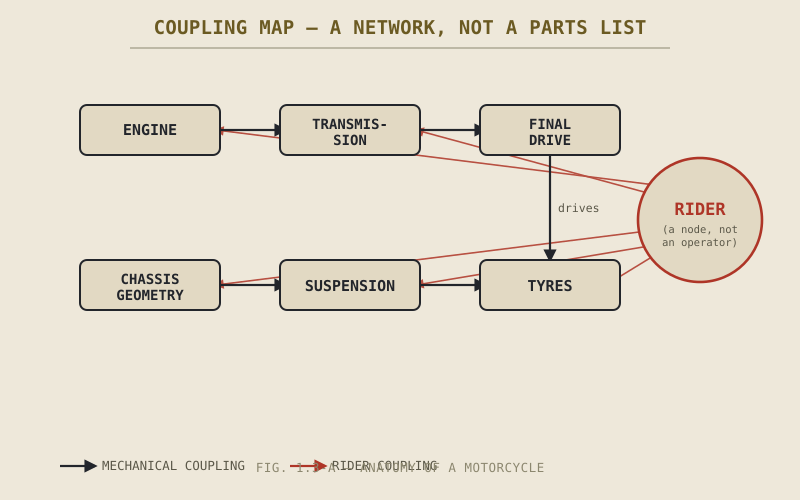

A mechanic replaces a worn rear shock because the bike feels vague in fast corners. The vagueness doesn't go away. It turns out the real problem was a stretched final drive chain changing the effective swingarm angle under power, which was changing how much load the rear tyre carried through the corner, which was what made the shock feel like it was doing the wrong job. The shock was fine the whole time. Why is it so easy to fix the part that isn't broken?
Chapters 1.1 and 1.2 have already been quietly relying on an idea this chapter is going to make explicit: nothing on a motorcycle acts alone. 1.1 closed on this point directly, and 1.2 showed you one concrete version of it — the front tyre alone carrying steering, braking, and cornering load with no sibling wheel to share the work. This chapter stops treating that as a passing observation and turns it into a working principle, because it's the principle that decides how the rest of this book has to be read.
A Part Doesn't Have One Job — It Has One Job That Changes
Ask what the rear suspension "does" and the honest first-pass answer is: it keeps the rear tyre in contact with the ground while the wheel moves up and down over bumps. That's true, but it's not a complete job description, because the demands on that suspension are not constant. Under hard acceleration, the chain pulls down on the swingarm and the suspension has to manage a bike trying to lift its front end. Under braking, weight shifts forward and the rear suspension is barely loaded at all, doing almost nothing, while the front fork suddenly does most of the work it was designed for. Mid-corner, the suspension is managing load that's arriving at an angle, not straight down, because the bike is leaned over.
The spring and damper inside that shock never change. What changes, constantly, is the job they're being asked to do, and that job is being set from outside the suspension entirely — by the engine's power delivery, by the brakes, by the chassis geometry, by how far over the bike is leaned. A suspension engineer who only studied springs and dampers in isolation, without studying what the rest of the motorcycle was doing to load them, would design a very good spring for a job that doesn't actually exist on a real motorcycle.
This is true of essentially every component on the machine, not just the suspension. A part's function is defined by its relationship to the rest of the system, not by the part sitting on a bench by itself.
Coupling: Pull One Thread, Three Others Move
Engineers have a word for this: coupling. Two systems are coupled when a change to one produces a change in the other, whether or not that was the intention. Motorcycles are unusually, almost aggressively coupled machines, and it's worth walking through a few concrete examples rather than leaving this abstract.
Fit a wider rear tyre, aiming only to get more grip. A wider tyre has a different profile — the shape of its cross-section — which changes how quickly the effective radius of the tyre shrinks as the bike leans over. That changes the bike's steering geometry mid-corner, which changes how the bike turns in, not just how much grip it has once turned in. You reached for more grip and picked up a handling change you didn't order.
Raise the rear ride height, aiming only for more cornering clearance. Lifting the rear of the bike relative to the front rotates the whole chassis around the wheelbase, which reduces the fork's rake angle. Rake is one of the primary numbers governing how eagerly the front end wants to fall into a turn and how stable it feels in a straight line, covered properly in Part IV. You reached for ground clearance and changed the bike's fundamental steering character.
Change the final drive gearing, aiming only for harder acceleration. Shorter gearing does deliver harder acceleration, but it also increases the engine's RPM at any given road speed, which changes vibration, fuel consumption, and how far you can ride before the engine is turning over faster than it's happy doing for a sustained stretch. You reached for acceleration and picked up a cruising-range problem.
None of these are edge cases or bad luck. They are the normal, predictable behaviour of a coupled system. On a motorcycle, there is close to no such thing as a change that touches only the part you meant to touch.

A simplified coupling map of a motorcycle — engine, transmission, final drive, chassis geometry, suspension, and tyres, shown as nodes connected by arrows rather than a parts list, with the rider drawn as a node touching nearly all of them.
Feedback Loops: When the System Talks Back to Itself
Coupling gets more interesting, and more important to understand, once it loops back on itself. A feedback loop exists when a change in one part eventually produces a change in the conditions that part itself depends on.
Take braking hard on the front wheel. That braking force shifts weight forward, which compresses the front suspension. A compressed fork changes the bike's rake and trail — the very geometry that determines how much braking force the front tyre can take before it starts to slide, and how the bike behaves if it does. So braking hard changes the geometry that governs how well the bike can keep braking hard. Push it far enough and the loop can work against you: more weight forward compresses the fork further, steepens the geometry further, and the front tyre's margin keeps shrinking exactly when you're asking the most of it.
This isn't a defect to be engineered away. It's simply what happens when a machine's structure is allowed to move in response to the forces acting on it, which every motorcycle's suspension is built to do on purpose. The point isn't that feedback loops are bad. It's that you cannot understand what a motorcycle is doing at any given instant by looking at one component's spec sheet. You have to know what state the rest of the system is in.
Why This Book Is Built in Two Passes
This is the point where the structure of the book stops being incidental and starts being the argument. Part II through Part VII exist to teach you the individual systems — engine, transmission, chassis, suspension, tyres, brakes — largely one at a time, in relative isolation from each other. That's a deliberate simplification, not an oversight. You cannot understand coupling between an engine and a chassis if you don't yet know what an engine does or what a chassis does. The individual-systems parts of this book are the vocabulary; you need the words before you can read the sentence.
Part VIII exists specifically to take that vocabulary back apart and reassemble it. It's where cornering force, load transfer, gyroscopic effects, and traction budgets get treated as one connected problem instead of six separate topics, because that's what they actually are on a moving motorcycle. Reading Part VIII without Parts II through VII first would be like reading a sentence in a language you haven't learned the words for yet. Reading Parts II through VII and stopping there, never reaching Part VIII, is arguably worse — it leaves you with an accurate list of parts and no working understanding of the machine those parts add up to.
Keep this structure in mind as a promise: every time a later individual-systems chapter says something like "we'll fully explain this once we reach Part VIII," that's not a brush-off. It's this chapter's principle being applied on purpose, one component at a time, until there's enough vocabulary to put the whole system back together properly.
A Common Misconception, Cleared Up Early
It's tempting, especially once you know a little about motorcycles, to diagnose problems and evaluate changes one component at a time — "the suspension feels harsh, so the suspension is the problem," or "I want more top speed, so I need a bigger engine." Sometimes that's exactly right. Often it isn't, because the symptom and the cause don't have to live in the same part.
This doesn't mean every problem is secretly complicated, or that you need a systems diagram to check your tyre pressure. Most maintenance really is as simple as it looks, and Part X and Part XI will give you an honest, methodical way to tell the difference between a simple problem and a coupled one. What this chapter asks you to give up is the assumption that a part behaving badly is automatically the part that's broken. On a motorcycle, it's at least as often the part that's faithfully doing its job under conditions some other part changed.
Where This Leads
There's one more piece missing from this picture, and it's the piece Chapter 1.1 already promised would get its own full treatment: the rider. Everything this chapter has described — the coupling, the feedback loops, the two-pass structure of the book — has been about the machine's components talking to each other. But the rider isn't outside that conversation, watching it happen. The rider's body position changes load distribution, which changes suspension behaviour, which changes geometry, which changes how the bike responds to the next input the rider gives it. The loop this chapter described running through the fork under hard braking doesn't stop at the tyre — it runs straight through the rider's hands, and back out again.
Chapter 1.4 picks up exactly here, and makes the case in full: the rider isn't a user of this system, standing outside it and issuing commands. The rider is a node in it, coupled to everything else on this chapter's diagram just as tightly as the suspension is coupled to the chassis.
Key Concepts to Remember
- A component's function isn't fixed — it's defined by what the rest of the motorcycle is currently demanding of it, which changes constantly with speed, lean, braking, and acceleration.
- Coupling means a change aimed at one part routinely produces effects in others: wider tyres change steering geometry, ride height changes rake, gearing changes both acceleration and cruising character.
- Feedback loops occur when a part's own behaviour changes the conditions that part depends on — braking compresses the fork, which changes the geometry governing how much braking force the front tyre can take.
- This book is deliberately built in two passes: Parts II–VII teach the individual systems as vocabulary, and Part VIII reassembles them into one connected, moving problem.
- A symptom and its cause don't have to live in the same component — diagnosing a motorcycle well means checking the coupled parts, not just the part that feels wrong.
Cross-References
| ← Ch. 1.1 | Introduced the motorcycle-as-a-system idea in brief; this chapter makes it a working principle. |
| ← Ch. 1.2 | Showed one concrete instance of coupling — a single tyre carrying steering, braking, and cornering duty with no sibling wheel to share it. |
| → Ch. 1.4 | Extends this chapter's coupling map to include the rider as a node in the system, not an outside operator of it. |
| → Pt. VIII | Motorcycle Physics — where this chapter's feedback loops and coupling examples are finally given full mathematical treatment. (Not yet published.) |